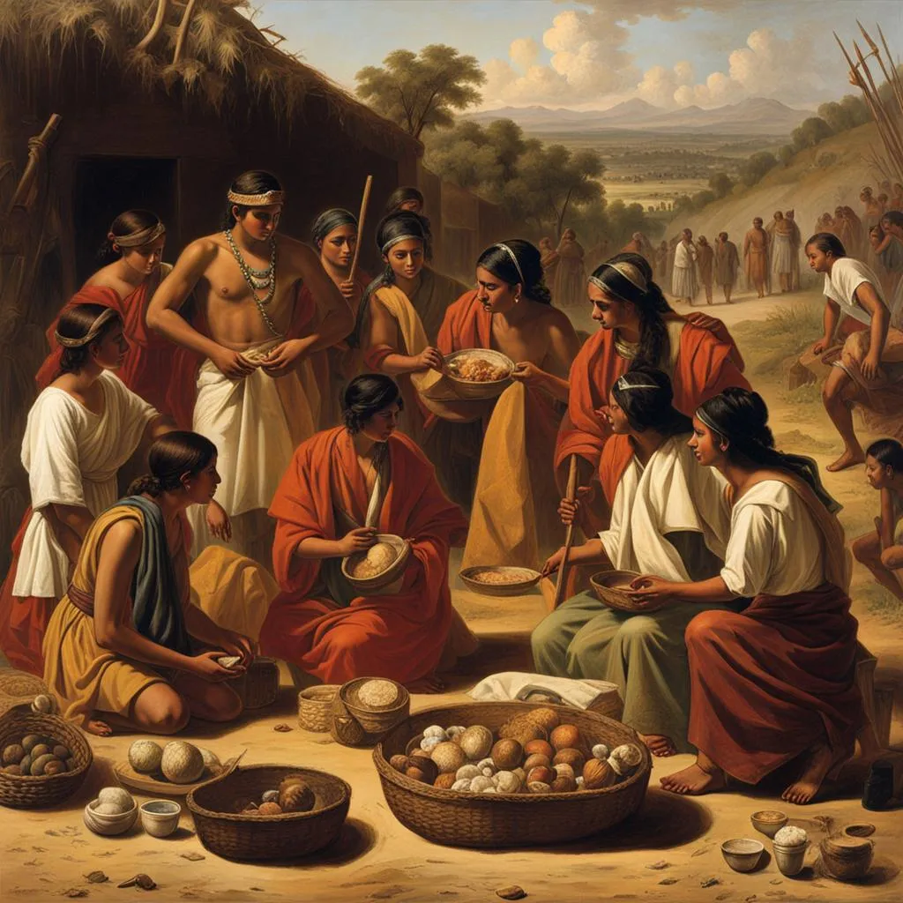
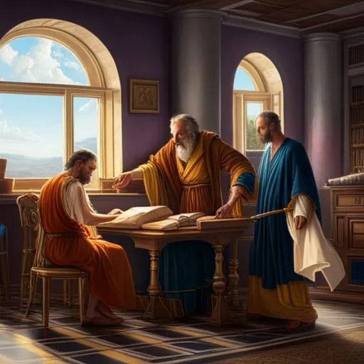

Breve repaso por la Historia del Sistema Educativo. 📚

APRENDIENDO EN EL NEOLÍTICO.

APRENDIENDO EN LA ANTIGUA GRECIA.
APRENDIENDO HACE ALGUNAS DÉCADAS.
Aprendizaje y sociedad: nuestros antepasados aprendían unos de otros las actividades de la vida cotidiana, por medio del contacto con los demás y la repetición constante. Con la invención de la Escritura, los textos comenzaron a ser vehículos del conocimiento y nacieron las primeras escuelas, donde un profesor, poseedor del conocimiento, dictaba a sus estudiantes para que aprendan. Durante la Edad Media todo el mundo estaba muy dominado por las ideas de la Iglesia, y había una jerarquía social y económica muy marcada entre la aristocracia y la población rural.En el Renacimiento, el redescubrimiento de los textos de los pensadores y filósofos griegos y romanos condujo a un renovado interés por la vida intelectual y la belleza, y a nuevas maneras de reconsiderar nuestro lugar en el mundo. Se produjeron varios cambios muy importantes como el trabajo de Copérnico y Galileo, que plantearon la posibilidad de que tal vez la Tierra no fuera el centro del universo. Pero lo más importante es que la invención de la imprenta generalizó el acceso a las ideas, por lo cual la inmensa mayoría de gente ya no tenía que depender de los argumentos y la autoridad de una minoría culta del clero. Sin embargo, el mayor cambio es el de la conciencia humana, hemos dejado de mirarnos el ombligo para intentar ser más objetivos sobre nuestro lugar en el mundo y el orden de las cosas, a medida que pasábamos de la Edad Media al Renacimiento y a la Ilustración.Ya en el s. XVIII, con la llegada de la Revolución Industrial, comenzaron a regularse los sistemas educativos con el objetivo de preparar a los trabajadores que se encargarían de las cadenas de montaje en las fábricas: hacer lo mismo una y otra vez durante todo el día. Por esa razón, las escuelas imitaban el mismo patrón: repetir y repetir; allí, se les enseñaban las materias útiles para la economía de carácter industrial. Lamentablemente, hasta hoy seguimos usando este mismo modelo que ya es obsoleto. La televisión, al igual que la imprenta, también fue una tecnología absolutamente revolucionaria, al igual que la cultura digital de ahora.